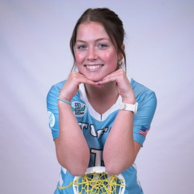
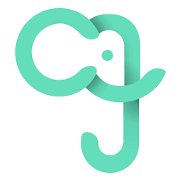
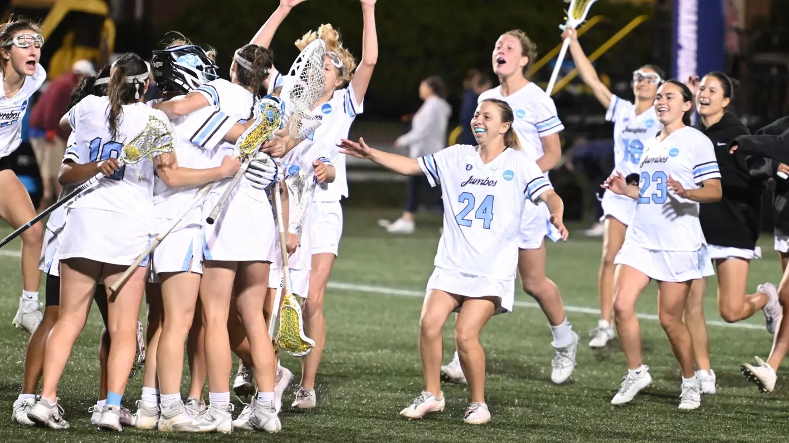
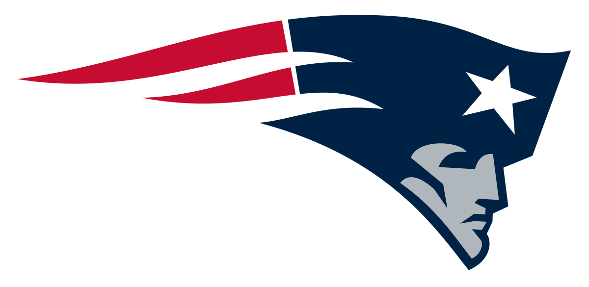
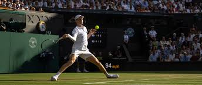
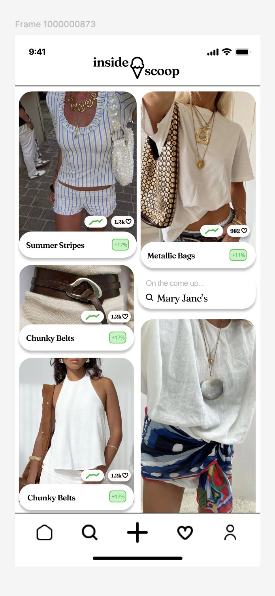

Hi, I'm Ella — software engineer, builder, and athlete.
I'm passionate about building technology that makes a real difference. Whether I'm leading product development at JumboCode, prototyping AI tools at Nasdaq, or building side projects that solve real problems, I believe in the power of great code and great teams.

About Me
I'm a Computer Science major at Tufts University, graduating in 2025, with a unique combination of technical skills, leadership experience, and entrepreneurial spirit. When I'm not coding or leading product teams, you'll find me on the lacrosse field where I've learned the importance of teamwork, resilience, and balancing multiple priorities.
My experience spans from leading 170+ student organizations to building AI-powered applications, from managing enterprise software projects to prototyping cutting-edge technology. I believe in creating technology that's not just functional, but delightful to use and meaningful to people's lives.
I'm always excited to take on new challenges, learn new technologies, and collaborate with passionate people who want to build something great.
What I Do
Product & Engineering
Leadership & Operations
Entrepreneurship
Some Samples
Here's a collection of projects that showcase my journey from student leader to product builder. Each one represents a problem I was passionate about solving.

JumboCode — Head of Operations & Product Manager
Led operations for a 170+ student nonprofit dev organization while product managing a full-stack volunteer scheduling platform. Improved registration efficiency by 30% and client satisfaction scores.

Lacrosse Analytics Dashboards
Analyzed NCAA D3 women's lacrosse stats to uncover what most strongly correlates with wins. Applied KMeans clustering to identify team archetypes and built interactive Tableau dashboards for coaches and players.
Web Scraper Pipeline
Built a resilient data extraction pipeline using Selenium and Python for sports analytics. Features schema validation, deduplication, and GitHub Actions automation for reliable data collection from rate-limited sites.

NFL Timing Study — Bayesian Analysis (Patriots)
Built a scraping pipeline and Bayesian model to test whether game timing (night vs. day) measurably shifts the Patriots' win probability after controlling for confounders.

Axess Tennis — Fantasy Sports Platform
A budget-based fantasy tennis platform with ATP/WTA scoring, weekly lineups, and live stats. Built for tennis fans who want real strategy and season-long team building.

Inside Scoop — AI Fashion Trend Tracker
An AI-powered fashion trend tracker that blends user wardrobes with global trend data and influencer signals. Save items to your closet and get personalized recommendations.
Experience
Nasdaq — Developer Experience Team
- Built CI/CD pipelines and onboarding tools for AI integration
- Prototyped Vision Pro applications for financial data visualization
- Contributed to developer tooling and automation systems
- Collaborated with cross-functional teams on AI adoption strategies
JumboCode — Head of Operations
- Led operations for 170+ student nonprofit development organization
- Product managed full-stack volunteer scheduling platform (React, Node.js, MongoDB)
- Improved registration efficiency by 30% and client satisfaction scores
- Managed budgets, event operations, and project coordination
Bain Capital — IT Finance & Project Management Intern
- Improved computer leasing processes for operational efficiency
- Contributed to intranet migration to modern platform
- Assisted in Single Sign-On system deployment
- Gained experience in corporate IT operations and finance
Varsity Lacrosse — Student Athlete
- Balanced demanding academic and athletic schedule while maintaining excellence
- Demonstrated resilience and teamwork under pressure
- Developed strong time management and leadership skills
- Maintained high performance in both academic and athletic arenas
Let's Build Something Cool
I'm always excited to discuss new opportunities, collaborate on interesting projects, or simply chat about technology and innovation. Let's connect!